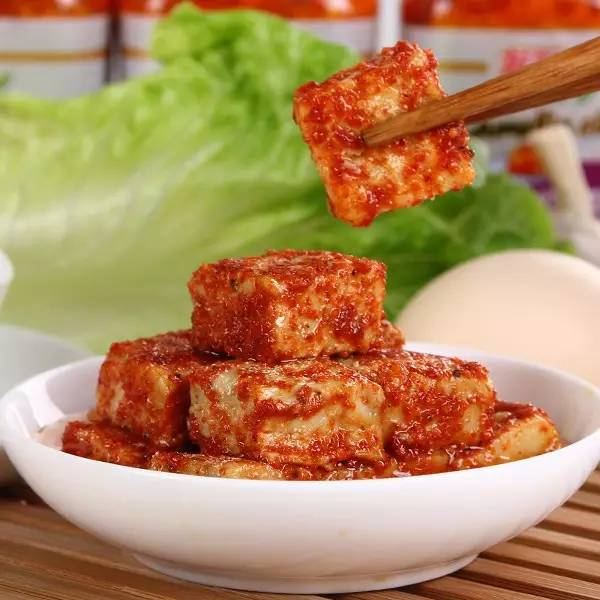
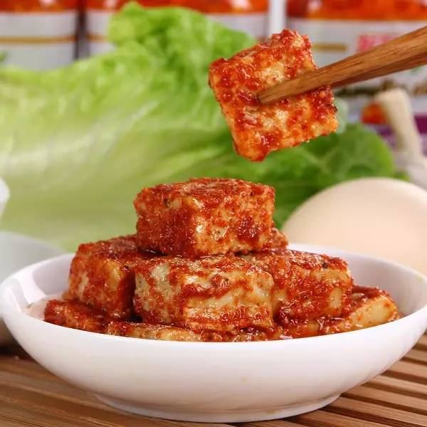

March 3, 2018
School life in Anhua County in the 80s and 90s
Below is a translation of an article in Chinese that talks about growing up in Anhua County during the 80s and early 90s. This is where Fanglai grew up, and she has told me the same stories.
It describes the experience of elementary and middle school students. They would spend weekends at home and the week at school. They would bring all their own food for the week, cook their own rice, and share a dorm room with 20 students. They would leave on foot for school on Sunday afternoon, with a backpack full of rice and pickled vegetables to feed themselves for the week.
These days, families are richer. Student eat out of cafeterias. Some families rent apartments near the school, so they can be close to their children, and the children don’t have to travel so far to get home.
I found the original article on WeChat, where Fanglai shared it. The article itself is somewhat repetitive, and may be a compilation of comments from some other article. WeChat is a social app plus communication platform plus digital wallet, and is ubiquitous in China these days.
70、80后安化人的青春回忆：带着咸菜上学的那些年
Reminiscences of Anhua people born in the 70s and 80s: the years we carried salted vegetables to school each week.
2016-01-05 网络 品味安化
January 5, 2016 | Online | Taste of Anhua
Incomplete translation of the original by Peter Radocchia.
生于70、80（90初）年代的农村，那时候的我们，上学时候是很艰苦的！
For those of us born in the countryside during the 70s and 80s (and early 90s), going to school was pretty tough!
那时家里孩子多，父母收入也不高，初中时候，家离学校远的，就寄读在学校，一周回去一次。
像现在陪读啥的根本没有，能在赶集的时候捎带点吃的就挺好的了。
Back then, families were big, money was tight, and by middle school home was far away.
We boarded at school and went home only once a week.
These days some families will move close to school, to be near their kids.
This practice was non-existent back then. If your family managed to bring you
something nice on market day, you'd be doing pretty well.

We took salted vegetables to school each week. Oh yes, those deliciously memorable salted vegetables!
记得那时候，周日下午就要返校，临走前，母亲把腌好的萝卜从大缸里拿出来，洗洗切成丝，滴上一点油炒，
再放上点儿辣椒，炒完了，给我装到罐头瓶里，我再塞满满一包馒头，接过几张零钱（一块的），这就是我一周的伙食。
At that time we had to return to school on Sunday afternoon.
When it was almost time to leave, mom would take some pickled radish out of the big crock,
wash and slice it, stir fry it with a touch of oil, add a little hot pepper, and finish the cooking.
She'd fill a jar, and I would stuff my bag with steamed buns.
Along with a few one-yuan bills, this was my food for a week.
The aluminum lunch box of the day. Everyone's lunch box had its own identifying marks--for example, an engraved family name.

Steaming rice.
那时候，家离学校远的，就寄读在学校（基本上没有家长在学校外面租房陪读这一说），
都是背一坨米，带一瓶咸菜，一般只有周末才回家一次，住学校的集体宿舍，日子叫一个艰苦！
Home was far from school, so we boarded (unlike today, back then families could
rarely move close to school to be near their children).
Everyone would lug a heap of rice and bring a jar of pickled vegetables.
Generally speaking, we only went home on the weekends, and we lived in group dorms.
Those days were pretty tough!
记得刚上初中那会儿，才开学时，有好多同学自己不会蒸饭，有的蒸饭不淘米，有的蒸饭不加水，
有的把握不好水的多少。当时我们一间二十个平方左右的宿舍住了二十几个同学，热闹是很热闹，
争吵打架被偷也是常事儿。
I remember at the beginning of middle school, at the start of the year, so many of
our classmates didn't know now to steam rice. Some would steam the rice without
washing it first, others wouldn't add any water, and some would add too much.
We shared a single 20 square meter dorm room with 20+ students. While it could be quite lively,
there were also plenty of arguments, fights, and theft.
最难熬的是冬天，要用冷水淘米洗饭盒，太阳出来，手上的冻疮又痛又痒！
Winter was the hardest time to endure. You had to wash your rice and lunch box in cold water.
When the sun came out, the chilblains on your hands were painful and itchy!

This is how we used to eat.

A wooden trunk for each student.
现在的孩子，好多是家长租房陪读；有些就算是住校，每顿都是在学校食堂买饭吃，
根本没有自己蒸饭这一说法了。对于现在大多数城镇、城市的娃儿们来说，很多是不知道那种生活，
也无法体会的。
Today, many parents rent apartments near school, some even live on campus.
Every meal is bought in the cafeteria, and no one steams their own rice.
For most urban kids growing up today, that old kind of life is unknown and incomprehensible.

那时候，我们背上一大周的米，自己蒸饭，然后拌上自己带的咸菜，要是零花钱够点，
那么就打一份汤，要是家里给得少，那么也是很舍不得打一份汤的。
Back then we carried a week's worth of rice, steamed it ourselves, and then mixed
it with vegetables that we also brought ourselves.
If we happened to have enough money, we might buy a bowl of soup.
If not, we'd just have to go without.
那时候日子过得是紧巴巴的，都是一天一天数着希望快点放周末，一般都是觉得过了星期三，
那这一周就快了，然后回到家中，尝尝家里的土鸡蛋，加加餐。
Life at school was constrained, and we'd count the days till the weekend.
Once we got past Wednesday, it felt like the week was almost over. Soon we'd
be back home, trying fresh village eggs, and eating our fill.
The lunch box of those days
The popular multi-function tea mug (dual-purpose for eating and drinking)

A bag for carrying canned food
那些年我们曾带过的菜
The dishes we took to school in those years
Salted Vegetable: pickled radish, thinly slicked and fried with a little oil. With enough steamed buns this could hold you over for a week. We also ate mustard greens and other pickled vegetables.

Eggs: absolutely a good thing back then, and the envy of your friends! At the time, each meal only included half an egg, and we didn't dare overeat. Nothing like today where kids throw their food around!

Dried Sweet Potato: typically, families had limited options for what kinds of foods they could send to school. But sometimes a family might have a little extra sweet potato that they could dry. It was delicious!
Fermented Tofu: usually preserved in winter. Really delicious.

 

那些年我们用过的人民币
The RMB that we used in those years


Two yuan would keep you happy all day, as happy as a dog with a bone!

Five yuan was as good as Chinese New Year! You could buy lots of delicious food, or secret it away....

New bills appeared in the 90s.

当年我们穷的像孙子，却快乐的像爷！回不去了，只能回忆，同意的给当年的同学们看看吧！
Back then we were poor as grandkids, but as happy as grandpas!
Those days are gone now, we can only go back in our memories.
If you agree, share with your friends from that time!
内容来源于网络，版权归原作者所有
Content comes from the internet, and copyright is retained by the original author(s).
品味安化
Taste of Anhua
编辑 | 邓迪波 | 百万安化人之家
Editor | Deng Dibo | Home of a million Anhua people
anhuar@qq.com